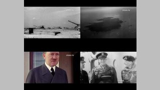

zurück
Geschichte - Thumbnail
Poster
Aegypten - 1
Aegypten - 2
Aegypten - 3
Aegypten - 4
Schaetze des alten Aegyp..
1983 - Welt am Abgrund..
Albert Schweitzer
Charles Darwin - Kaplan ..
Chruschtschows Reise in..
Das Diesel-Raetsel
Das Gold der Piraten
Das Mittelalter im Suedw..
Das Mittelalter im Suedw..
Das Schicksal Roms (1 v..
Das Schicksal Roms (2 v..
Das Wunder von Berlin
Der andere Abraham Linc..
Der Buergerkrieg in Nord..
Der Buergerkrieg in Nord..
Der Fluch des Edgar Hoo..
Der Goldrausch
Der groesste Herzschmer..
Der Heilige Krieg - Das S..
Der Limes - Gefahr an Ro..
Der Limes - Grenzwall ge..
Der Limes
Der Untergang der Pamir ..
Der Untergang der Pamir ..
Der Untergang der Roma..
Der Untergang der Wikin..
Der wirkliche Amerikaner..
Die Anfaenge der Mensch..
Die Anfaenge der Mensch..
Die Anfaenge der Mensch..
Die Deutsche Hanse (1 v..
Die Deutsche Hanse (2 v..
Die Fugger (1) - Der Aufs..
Die Fugger (2) - Jakob, d..
Die Geschichte des Essen..
Die Geschichte des Essen..
Die Legende George Was..
Die letzten sieben Monat..
Die nackte Terrakotta-Ar..
Die Pracht des alten Russ..
Die Renaissance - Aufbr..
Die Varusschlacht
Ein Tag im Mittelalter
Farah Diba Pahlavi - Die l..
Frauen, die Geschichte m..
Fuerst Pueckler - Playboy..
Geliebter Johann, Geliebt..
Germanien vor 2000 Jahr..
Grosse Voelker - Die Ger..
Grosse Voelker - Die Roe..
Grosse Voelker - Die Wik..
Historisches Museum Mo..
J_R_R_ Tolkien
Karl Marx - Der deutsche..
Klima macht Geschichte ..
Klima macht Geschichte ..
Martin Luther - Die Gehei..
Mussolini - Bauplan des ..
Mussolini - Chronik eine..
Mussolini - Ikone des Fa..
Mythos Dschingis Khan..
Sex in der Steinzeit
Zeitreise - Die Welt im Ja..
Zeitreise - Die Welt im Ja..
Darwins neue Welt (1 von..
Darwins neue Welt (2 von..
Darwins neue Welt (3 von..
Darwins neue Welt (4 von..
Darwins neue Welt (5 von..
Das Bayrische Jahrtausen..
Das Bayrische Jahrtausen..
Das Bayrische Jahrtausen..
Das Bayrische Jahrtausen..
Das Bayrische Jahrtausen..
Das Bayrische Jahrtausen..
Das Bayrische Jahrtausen..
Das Bayrische Jahrtausen..
Das Bayrische Jahrtausen..
Das Bayrische Jahrtausen..
Napoleon und Bayern
25h Mauerfall - Schabow..
Aus Liebe zum Volk
Damals nach der DDR - ..
Damals nach der DDR - ..
Damals nach der DDR - ..
Damals nach der DDR - ..
Damals nach der DDR - ..
Der Fall der Mauer - Wie ..
Diesseits und jenseits de..
Operation Zersetzung - T..
Ruebergemacht - und da..
Wie die DDR wirklich war..
Wie die DDR wirklich war..
Wie die DDR wirklich war..
Wie die DDR wirklich war..
ZDFInfo - Der letzte Som..
ZDFInfo - Der letzte Som..
ZDFInfo - Der letzte Som..
ZDFInfo - Der letzte Som..
Einer von uns - Der Hom..
Einer von uns - Der Hom..
Einer von uns - Der Hom..
Einer von uns - Der Hom..
Einer von uns - Der Hom..
Deutschland-Saga 1 - W..
Deutschland-Saga 2 - W..
Deutschland-Saga 3 - W..
Deutschland-Saga 4 - W..
Deutschland-Saga 5 - W..
Deutschland-Saga 6 - W..
Die Deutschen (01 von 1..
Die Deutschen (02 von 1..
Die Deutschen (03 von 1..
Die Deutschen (04 von 1..
Die Deutschen (05 von 1..
Die Deutschen (06 von 1..
Die Deutschen (07 von 1..
Die Deutschen (08 von 1..
Die Deutschen (09 von 1..
Die Deutschen (10 von 1..
Die Deutschen - August ..
Die Deutschen - Barbaro..
Die Deutschen - Bismarc..
Die Deutschen - Das Ma..
Die Deutschen - Die Weg..
Die Deutschen - Exklusi..
Die Deutschen - Friedric..
Die Deutschen - Gustav ..
Die Deutschen - Heinric..
Die Deutschen - Hildega..
Die Deutschen - Karl der ..
Die Deutschen - Karl IV u..
Die Deutschen - Karl Mar..
Die Deutschen - Ludwig ..
Die Deutschen - Luther u..
Die Deutschen - Napoleo..
Die Deutschen - Otto un..
Die Deutschen - Preusse..
Die Deutschen - Robert B..
Die Deutschen - Rosa Lu..
Die Deutschen - Thomas..
Die Deutschen - Wallens..
Die Deutschen - Wilhelm..
Die Deutschen - Wissens..
Friedrich - Ein deutscher ..
Friedrich der Grosse
Heimat - Eine deutsche ..
Heimat - Eine deutsche ..
Heimat - Eine deutsche ..
Heimat - Eine deutsche ..
Zum Glueck Deutschland..
Die Entdeckungen grosse..
Die Entdeckungen grosse..
Die Entdeckungen grosse..
Die Entdeckungen grosse..
Die Entdeckungen grosse..
Die Entdeckungen grosse..
Die Entdeckungen grosse..
Die Entdeckungen grosse..
Die Entdeckungen grosse..
Die Entdeckungen grosse..
Die Entdeckungen grosse..
Die Entdeckungen grosse..
Die Entdeckungen grosse..
Die Entdeckungen grosse..
Die Entdeckungen grosse..
Die Entdeckungen grosse..
Die Kelten (1 von 3) - Eur..
Die Kelten (2 von 3) - Ka..
Die Kelten (3 von 3) - Au..
Die Neuerfindung der We..
Die Neuerfindung der We..
Die Neuerfindung der We..
Die Neuerfindung der We..
Die Neuerfindung der We..
Die Neuerfindung der We..
Die Reise der Menschheit..
Die Reise der Menschheit..
Die Reise der Menschheit..
Die Welt im 2_ Weltkrieg..
DVD01 1
DVD01 2
DVD01 3
DVD02 1
DVD02 2
DVD03 2
DVD03 5
DVD04 2
DVD04 5
DVD05 1
DVD05 2
DVD05 3
DVD06 1
DVD06 2
DVD07 1
DVD07 2
DVD08 1
DVD08 2
DVD09 1
DVD09 2
DVD10 1
DVD10 2
DVD11 1
DVD11 2
DVD12 1
DVD12 2
Als Feuer vom Himmel fi..
Angriff auf Europa
Aus heiterem Himmel1
Berlin 1945
Bonhoeffer - Ein Pastor g..
Countdown zum Unterga..
Countdown zum Unterga..
Countdown zum Unterga..
Countdown zum Unterga..
Countdown zum Unterga..
Countdown zum Unterga..
Countdown zum Unterga..
Countdown zum Unterga..
Countdown zum Unterga..
Countdown zum Unterga..
Countdown zum Unterga..
Deutschland 1945 von o..
Die Jahreschronik des Dri..
Die Jahreschronik des Dri..
Die Jahreschronik des Dri..
Die Suche nach Hitlers V..
Die Suche nach Hitlers V..
Geheimnisse des Zweiten..
Himmler Liebesgruesse u..
Himmlers Macht
Hitler und das Geld
Hitler und die Frauen
Hitlers Geheimwaffenche..
Nacht ueber Deutschland..
Zwischen den Zeiten 194..
Nicht laenger nichts_ Ge..
Nicht laenger nichts_ Ge..
Nicht laenger nichts_ Ge..
Nicht laenger nichts_ Ge..
Pompeji, in Stein verewig..
Primo Carnera - Liebens..
Helmut Schmidt zur musl..
Katastrophen der Erdgesc..
Katastrophen der Erdgesc..
Katastrophen der Erdgesc..
Katastrophen der Erdgesc..
Katastrophen der Erdgesc..
Momente der Geschichte ..
Momente der Geschichte ..
Momente der Geschichte ..
Momente der Geschichte ..
Momente der Geschichte ..
Momente der Geschichte ..
Momente der Geschichte ..
Momente der Geschichte ..
100 Jahre Berlin - Vom K..
2_Weltkrieg - Die Ostfro..
2_Weltkrieg 1939
2_Weltkrieg 1940
60 Jahre Zeitgeschichte..
9_November 1989 - Ein ..
Amerikas Kriege - Korea..
Auf den Spuren der frueh..
D-Day

Das andere Deutschland..
Der 11_September 2001..
Der Fall der Mauer
Der Nuernberger Prozess..
Der Sturm auf Berlin - En..
Deutschland im kalten Kr..
Die Eroberung des Alls - ..
Die gekaufte Revolution ..
Die gestresste Seele
Die Stunde Null - Berlin S..
Franz Josef Strauss - Rud..
Friedrich der Grosse
Heinrich Himmler
Hitler und Ludendorf
Hitlers Machtergreifung..
Jerusalem - Mythos einer..
Jesus - Wer war Jesus vo..
Joseph Goebbels
Kennedy - Ich bin ein Ber..
Leben und Sterben der A..
Moa - Der lange Marsch ..
Muenchen Olympia 1972 ..
Mythos Rommel
Nahost - Von Krieg zu Kr..
Napolean und die Voelke..
Osama bin Laden
Preussen - Legende von..
Richard Wagner - Ein deu..
SpiegelTV - Das andere ..
SpiegelTV - Leben und St..
Titanic - Die letzten Stun..
Vor uns die Sintflut - Wa..
Wettlauf um die Welt - Di..
Wilhelm II
Willy Brand - Der Mensch..
Vom Schreiben und Denk..
Vom Schreiben und Denk..
Vom Schreiben und Denk..
Vom Schreiben und Denk..
Welt der Ritter - Die Letz..
Welt der Ritter - Fuer Ruh..
Welt der Ritter - Helden a..
Weltgeschichte mit Hape ..
Weltgeschichte mit Hape ..
Weltgeschichte mit Hape ..
Weltgeschichte mit Hape ..
Weltgeschichte mit Hape ..
Weltgeschichte mit Hape ..
ZDF-History - 100 Jahre ..
ZDF-History - 1983 Welt..
ZDF-History - Aktion Le..
ZDF-History - Bruderkrie..
ZDF-History - Caesaren..
ZDF-History - Das Atten..
ZDF-History - Das Dram..
ZDF-History - Das Geda..
ZDF-History - Das Gehei..
ZDF-History - Das Gehei..
ZDF-History - Das Gehei..
ZDF-History - Das Geise..
ZDF-History - Decknam..
ZDF-History - Der gross..
ZDF-History - Der letzte ..
ZDF-History - Der Mauer..
ZDF-History - Der Urme..
ZDF-History - Der Urme..
ZDF-History - Der Urme..
ZDF-History - Deserteur..
ZDF-History - Die Deuts..
ZDF-History - Die Gehei..
ZDF-History - Die Gesch..
ZDF-History - Die Gesch..
ZDF-History - Die Gesch..
ZDF-History - Die Gesch..
ZDF-History - Die Gesch..
ZDF-History - Die Gesch..
ZDF-History - Die Gesch..
ZDF-History - Die Gesch..
ZDF-History - Die Gesch..
ZDF-History - Die Gesch..
ZDF-History - Die Gesch..
ZDF-History - Die Gesch..
ZDF-History - Die Gesch..
ZDF-History - Die groes..
ZDF-History - Die groes..
ZDF-History - Die groes..
ZDF-History - Die gross..
ZDF-History - Die Kinder..
ZDF-History - Die letzte..
ZDF-History - Die Nackt..
ZDF-History - Die Stars ..
ZDF-History - Die Todes..
ZDF-History - Die zwei L..
ZDF-History - Die zwei L..
ZDF-History - Dreckige ..
ZDF-History - Elly Beinh..
ZDF-History - Gefallene ..
ZDF-History - Geliebter ..
ZDF-History - Happy Birt..
ZDF-History - Henry For..
ZDF-History - Inglouriou..
ZDF-History - J_P_ Morg..
ZDF-History - Kampfzon..
ZDF-History - Kennedy u..
ZDF-History - Kreuz geg..
ZDF-History - Krieg der ..
ZDF-History - Lost Place..
ZDF-History - Moerder u..
ZDF-History - Mythos Lil..
ZDF-History - Mythos Si..
ZDF-History - Nostrada..
ZDF-History - Olympia 1..
ZDF-History - Operation..
ZDF-History - Prinz Char..
ZDF-History - Rockefelle..
ZDF-History - Rommel ..
ZDF-History - Roms Rac..
ZDF-History - Rosenkrie..
ZDF-History - Speers Ta..
ZDF-History - Staatsfein..
ZDF-History - Supermac..
ZDF-History - Todesfalle..
ZDF-History - Traumjob ..
ZDF-History - Ueberlebt ..
ZDF-History - Unsere Be..
ZDF-History - Unsere Be..
ZDF-History - Unsere M..
ZDF-History - Unsere M..
ZDF-History - Verlorene ..
ZDF-History - Vietnam u..
ZDF-History - Wolfskind..
ZDFinfo - 1066 - Kampf ..
ZDFinfo - 1066 - Kampf ..
ZDFinfo - Buback - Die S..
ZDFinfo - Die Geschichte..
ZDFinfo - Die Geschichte..
ZDFinfo - Die Geschichte..
ZDFinfo - Die Geschichte..
ZDFinfo - Die Geschichte..
ZDFinfo - Die Geschichte..
ZDFinfo - Tod eines Inter..
ZDFinfo-1929 - Der gros..
ZDFinfo-1929 - Der gros..


.jpg)
.jpg)


.jpg)
.jpg)


.jpg)
.jpg)


.jpg)
.jpg)
 - Der Aufstieg.jpg)
 - Jakob, der Reiche.jpg)


.jpg)
.jpg)
.jpg)
.jpg)
.jpg)


.jpg)
.jpg)
.jpg)
.jpg)
.jpg)
.jpg)
.jpg)
.jpg)
 - Die afrikanische Wiege.jpg)
 - Asien - Die grosse Reise.jpg)
 - Australien - Ein Volk am Ende der Welt.jpg)
 - Europa - Homo sapiens et neanderthalensis.jpg)
 - Nord- und Suedamerika - Sibirische Wanderer.jpg)


.jpg)
.jpg)
.jpg)
.jpg)
.jpg)
.jpg)
.jpg)
.jpg)
.jpg)
.jpg)


.jpg)
.jpg)
.jpg)
.jpg)


 - Europas vergessene Macht.jpg)
 - Kampf um Gallien.jpg)
 - Aufstand der Koenigin.jpg)
.jpg)
.jpg)
.jpg)
.jpg)
.jpg)
.jpg)
 - Der Aufbruch.jpg)
 - Fremde Welten.jpg)
 - Welt in Bewegung.jpg)


.jpg)
.jpg)
.jpg)
.jpg)
.jpg)
.jpg)
.jpg)
.jpg)
.jpg)
.jpg)
.jpg)

 1933 - 1935 - Gleichschaltung.jpg)
 1936 - 1939 - Der Weg in den Krieg (Teil 24).jpg)
 1942-1945 - Der Untergang.jpg)


 - Fabrik.jpg)
 - Barrikade.jpg)
 - Fliessband.jpg)
 - Aufloesung.jpg)


.jpg)
.jpg)
.jpg)
.jpg)
.jpg)
.jpg)
.jpg)
.jpg)
.jpg)
.jpg)
.jpg)
.jpg)
.jpg)


.jpg)
.jpg)
.jpg)
.jpg)
.jpg)
.jpg)


 - Zeiten des Aufbruchs.jpg)
.jpg)
 - Goetterdaemmerung.jpg)
 - Kriege und Katastrophen.jpg)
 - Neue Chancen.jpg)
.jpg)
.jpg)
.jpg)
 - Grosse Revolutionen.jpg)
 - Die Welt wird modern.jpg)
 - Vergessen oder Ewigkeit.jpg)


.jpg)
.jpg)


.jpg)
.jpg)

.jpg)
.jpg)
.jpg)
.jpg)
.jpg)
.jpg)

.jpg)
.jpg)